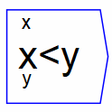
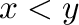

Next: le
Up: Binary Operations
Previous: Polygamma
Contents

Returns 0 or 1, depending on whether 
is true (1) or false (0).
The operator can be placed on the canvas in two ways:
- From the Binary Operations (``binop'') toolbar; or
- By typing the letters "lt" on the canvas and then pressing the Enter
key.